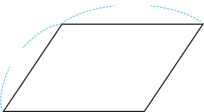

평행사변형에서 마주 보는 두 변의 길이는 어떤 특징이 있나요?

4cm
6cm
모든 변의 길이가 같습니다.
평행사변형의 둘레를 구하는 방법을 이야기해 보세요.
4cm
6cm
한 변의 길이와 다른 한 변의 길이를 더한 후 이를 2배 하여 구합니다.
정다각형의 둘레는 몇 cm인지 구해 보세요.
(평행사변의 둘레) =
×
2
+
×
2
=
(
+
)
×
2
식을 이용하여 평행사변형의 둘레는 몇 cm인지 구해 보세요.
식:
=
답:
cm